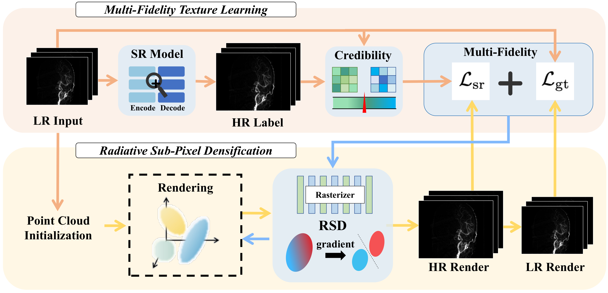
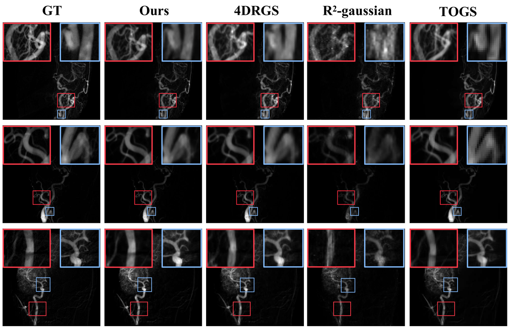

DSA-SRGS
简单摘要
数字减影血管造影（DSA）是辅助诊断和治疗脑血管疾病的关键影像技术。高斯分布和动态神经表示方面的最新进展使得能够根据稀疏动态输入进行稳健的 3D 血管重建。然而，这些方法从根本上受到输入投影分辨率的限制，其中执行简单的上采样以增强渲染分辨率不可避免地会导致严重的模糊和混叠伪影。超分辨率能力的缺乏导致重建的4D模型无法恢复细粒度的血管细节和复杂的分支结构，从而限制了其在精准诊断和治疗中的应用。为了解决这个问题，本文提出了 DSA-SRGS，这是第一个用于动态稀疏视图 DSA 重建的超分辨率高斯泼溅框架。
具体来说，我们引入了一个多保真纹理学习模块，它将来自微调的 DSA 特定超分辨率模型的高质量先验集成到 4D 重建优化中。为了减轻伪标签潜在的幻觉伪影，该模块采用置信度感知策略来自适应地加权原始低分辨率投影和生成的高分辨率伪标签之间的监督信号。此外，我们开发了辐射子像素致密化，这是一种自适应策略，利用高分辨率子像素采样的梯度累积来细化 4D 辐射高斯内核。对两个临床 DSA 数据集的大量实验表明，DSA-SRGS 在定量指标和定性视觉保真度方面均显着优于最先进的方法。
稀疏视图 DSA 重建高斯泼溅超分辨率。


简而言之，这篇论文关注的核心是：数字减影血管造影（DSA）是辅助诊断和治疗脑血管疾病的关键影像技术。高斯分布和动态神经表示方面的最新进展使得能够根据稀疏动态输入进行稳健的 3D 血管重建。然而，这些方法从根本上受到输入投影分辨率的限制，其中执行简单的上采样以增强渲染分辨率不可避免地会导致严重的模糊和混叠伪影。超分辨率能力的缺乏导…
数字减影血管造影（DSA）以高时空分辨率的二维成像清晰呈现血管动态，为病变的诊断和治疗提供关键依据。传统DSA的清晰成像依赖于密集的投影采集，导致辐射剂量较高且容易引入运动伪影。因此，在稀疏视图条件下实现高质量的4D DSA重建已成为该领域的重要研究方向。尽管一些研究成功地将3D高斯分布应用于医学成像领域，并引入了DSA时间序列的动态建模和累积剪枝策略，但重建质量仍然受到输入投影分辨率的限制。在低分辨率条件下，渲染结果容易出现边缘模糊、混叠伪影和噪声敏感性等问题，严重制约了其在精准诊疗中的临床应用。
值得注意的是，解决图像分辨率有限问题的主流计算机视觉方法是图像超分辨率（SR）技术。 SR研究主要集中在网络架构创新，涵盖CNN方法sSRCNN、EDSR和RCAN。通过 SwinIR、DAT、Mambair 和 HAT 等 Transformer 模型以及 Real-ESRGAN 等 GAN 方法，性能不断提高。针对轻量化的需求，CATANet通过内容感知的token聚合实现高效、远程的信息交互，并在轻量级超分辨率任务中取得了领先的性能。
虽然像 SRGS 这样的最新前沿技术已经开始将 SR 先验集成到高斯泼溅中，但它们在医学环境中的功效仍然有限。由于显着的域间隙，这些通用模型经常引入“幻觉伪影”，从而损害血管结构的物理保真度和临床可靠性。为了解决分辨率瓶颈，本文提出了DSA-SRGS，一种用于动态稀疏视图DSA重建的超分辨率高斯泼溅框架，在端到端优化中统一了超分辨率学习和4D动态重建，如图1所示。具体来说，我们的方法首先使用微调的超分辨率模型对低分辨率输入图像进行超分辨率，以恢复原始分辨率的详细信息。
随后，引入了多保真学习，它吸收超分辨率模型提供的高频纹理信息......
核心创新
综合引言与方法部分，这篇论文的核心创新可以概括为以下几方面：
1）问题定义与研究动机
数字减影血管造影（DSA）以高时空分辨率的二维成像清晰呈现血管动态，为病变的诊断和治疗提供关键依据。传统DSA的清晰成像依赖于密集的投影采集，导致辐射剂量较高且容易引入运动伪影。因此，在稀疏视图条件下实现高质量的4D DSA重建已成为该领域的重要研究方向。尽管一些研究成功地将3D高斯分布应用于医学成像领域，并引入了DSA时间序列的动态建模和累积剪枝策略，但重建质量仍然受到输入投影分辨率的限制。在低分辨率条件下，渲染结果容易出现边缘模糊、混叠伪影和噪声敏感性等问题，严重制约了其在精准诊疗中的临床应用。值得注意的是，解决图像分辨率有限问题的主流计算机视觉方法是图像超分辨率（SR）技术。 SR研究主要集中在网络架构创新，涵盖CNN方法sSRCNN、EDSR和RCAN。通过 SwinIR、DAT、Mambair 和 HAT 等 Transformer 模型以及 Real-ESRGAN 等 GAN 方法，性能不断提高。针对轻量化的需求，CATANet通过内容感知的token聚合实现高效、远程的信息交互，并在轻量级超分辨率任务中取得了领先的性能。虽然像 SRGS 这样的最新前沿技术已经开始将 S…
2）方法框架与核心模块
问题定义给定动态 DSA 序列的低分辨率投影输入，其中 \(T\) 和 \(V\) 分别表示总时间帧和稀疏视点。对于每个视图\(v\)，我们根据其相应收集的几何参数构造投影矩阵\(P_v = K_v[R_v t_v]\)。 DSA-SRGS旨在从这些稀疏采样的低分辨率动态投影直接重建高保真四维血管模型，并从任意视点和任意时间点渲染高分辨率DSA图像\(I^HR R^H W\)。辐射亚像素致密化我们将血管段表示为高斯核 \(G = \g_i\_i=1^N\)，同时引入依赖于时间的中心衰减函数来捕获造影剂浓度的动态演变。为了预测这个衰减值，我们设计了一个动态神经衰减场（DNAF）：其中\(_i\)表示高斯核的位置，\(H_3D()\)和\(H_4D(,)\)分别提取静态场景特征和时空动态特征，\(()\)是将特征映射到衰减值\(_i(t)\)的MLP。对于渲染，我们采用 X 射线光栅化管道和累积衰减修剪策略：其中 是修剪间隔内的迭代次数， 是第 次迭代的时间戳。剪枝虽然可以清除背景，但无法解决分辨率不足导致的细节丢失问题。为此，受Pixel-GS等人的启发，本文提出了辐射亚像素致密化策略…
3）实验设计与工程价值
实验设置数据集我们在两个临床DSA数据集上评估了模型性能：DSA-15来自4DRGS工作（15例），DSA-28是自我收集的数据（28例），覆盖左脑、右脑和后脑的多中心样本。此外，还收集了额外的 135 个临床动态 DSA 序列。经过数字减影处理后，获得了17,822张血管减影图像，用于微调超分辨率模型。评估标准我们使用三个互补指标来评估 DSA 图像的生成质量，使用三个互补指标：用于重建质量的像素级 PSNR，用于结构一致性的补丁级 SSIM。实现细节对于辐射亚像素致密化，我们设置了 100 次迭代的梯度累积窗口，使用与密度控制相同的分割阈值。剪枝遵循阈值\(=110^-6\)的累积衰减策略。高斯核的初始数量为\(M=30k\)，阈值\(=0.016\)。多保真学习权重\(=0.4\)和SSIM损失权重\(_ssim=0.2\)。实验在单个 RTX 3090 GPU 上进行，每个案例的…
技术细节
下面按照论文的方法章节结构展开，重点说明模型的关键模块、公式设计和训练策略。
问题定义给定动态 DSA 序列的低分辨率投影输入，其中 \(T\) 和 \(V\) 分别表示总时间帧和稀疏视点。对于每个视图\(v\)，我们根据其相应收集的几何参数构造投影矩阵\(P_v = K_v[R_v t_v]\)。 DSA-SRGS旨在从这些稀疏采样的低分辨率动态投影直接重建高保真四维血管模型，并从任意视点和任意时间点渲染高分辨率DSA图像\(I^HR R^H W\)。辐射亚像素致密化我们将血管段表示为高斯核 \(G = \g_i\_i=1^N\)，同时引入依赖于时间的中心衰减函数来捕获造影剂浓度的动态演变。为了预测这个衰减值，我们设计了一个动态神经衰减场（DNAF）：其中\(_i\)表示高斯核的位置，\(H_3D()\)和\(H_4D(,)\)分别提取静态场景特征和时空动态特征，\(()\)是将特征映射到衰减值\(_i(t)\)的MLP。对于渲染，我们采用 X 射线光栅化管道和累积衰减修剪策略：其中 是修剪间隔内的迭代次数， 是第 次迭代的时间戳。剪枝虽然可以清除背景，但无法解决分辨率不足导致的细节丢失问题。为此，受Pixel-GS等人的启发，本文提出了辐射亚像素致密化策略。通过在高分辨率亚像素采样中累积梯度，引导高斯核在纹理丰富的区域进行自适应分割，从而增强恢复小血管分支的能力。该策略根据高斯核的投影梯度动态识别需要细化的区域。梯度较大的区域需要较高的高斯核密度。因此，致密化条件可以表述为：其中\(g_i\)是高斯核，\(_i\)是累积梯度，\(_grad\)是梯度阈值，\(_iter\)是迭代相关的衰减系数。对于满足条件的每个种子内核 \(g_i\)，RSD 生成 \(K\) 个子内核，新生成的内核在父内核周围形成更精细的覆盖：其中 \(\) 控制位置偏移幅度，\(\) 是尺度衰减因子。
此外，该策略引入了残差引导机制，该机制使用渲染图像和地面实况图像之间的差异图主动在高残差区域添加小尺度高斯核。多保真纹理学习虽然亚像素约束促进高斯核致密化，但输入的低分辨率图像缺乏高频纹理，仅通过内部约束很难恢复血管的精细结构。为了提供 4D 重建的外部先验，我们引入了 DSA 专用的超分辨率 (SR) 模型来生成高分辨率纹理。为了降低模型学习不可靠的虚幻工件的风险，我们进一步设计了多保真度学习策略......
$$ \rho_i(t) = \Phi\left(H_{3D}(\bm{\mu}_i) \oplus H_{4D}(\bm{\mu}_i, t)\right), $$
es W\) 从任意观点和任意时间点。辐射亚像素致密化我们将血管段表示为高斯核 \(G = \g_i\_i=1^N\)，同时引入依赖于时间的中心衰减函数来捕获造影剂浓度的动态演变。为了预测这一点……
$$ \bar{\rho}_i = \frac{1}{N_{\text{iter}}} \sum_{k=1}^{N_{\text{iter}}} \rho_i(t_k), $$
\)表示高斯核的位置，\(H_3D()\)和\(H_4D(,)\)分别提取静态场景特征和时空动态特征，\(()\)是将特征映射到衰减值\(_i(t)\)的MLP。对于渲染，我们采用 X 射线光栅化管道和累积衰减 p…
$$ \mathcal{D}_{\text{RSD}} = \{g_i \mid \|\nabla_i\| > \tau_{\text{grad}} \cdot \eta_{\text{iter}}\}, $$
lution子像素采样，引导高斯核在纹理丰富的区域进行自适应分割，从而增强恢复小血管分支的能力。该策略根据高斯核的投影梯度动态识别需要细化的区域。梯度较大的区域...
$$ \boldsymbol{\mu}_{i}^{(k)} = \boldsymbol{\mu}_i + \Delta\boldsymbol{\mu}_{i}^{(k)}, \quad \Delta\boldsymbol{\mu}_{i}^{(k)} \sim \mathcal{N}(0, \boldsymbol{\Sigma}_i \cdot \alpha), $$
rad _iter\，方程，其中\(g_i\)是高斯核，\(_i\)是累积梯度，\(_grad\)是梯度阈值，\(_iter\)是迭代相关的衰减系数。对于每个满足条件的种子核\(g_i\)，RSD生成\(K\)个子核，新生成的核形成一个fi…
$$ \boldsymbol{s}_{i}^{(k)} = \beta \cdot \boldsymbol{s}_i, \quad \beta \in (0,1), $$
迭代相关的衰减系数。对于满足条件的每个种子内核 \(g_i\)，RSD 生成 \(K\) 个子内核，新生成的内核在父内核周围形成更精细的覆盖：其中 \(\) 控制位置偏移幅度，\(\) 是尺度衰减因子。此外，该策略...
$$ C = \sigma\left(\alpha \cdot \mathcal{S}(I_{\text{SR}}, I_{\text{LR}}^{\uparrow}) + \beta \cdot \mathcal{T}(I_{\text{SR}})\right), $$
DSA 的超分辨率 (SR) 模型可生成高分辨率纹理。为了降低模型学习不可靠的虚幻工件的风险，我们进一步设计了多保真度学习策略。具体来说，构建了一个有信心的教学参考图像，该图像在高...

把全文方法串起来看，这篇论文的逻辑基本都遵循同一条主线：先把输入组织成更容易处理的表示，再通过模型结构和损失函数把这个表示推向目标输出，最后用可视化与数值实验共同证明该设计有效。
实验结论
实验部分主要回答两个问题：第一，方法是否真的优于已有基线；第二，这种优势来自哪一个设计决策。
实验设置数据集我们在两个临床DSA数据集上评估了模型性能：DSA-15来自4DRGS工作（15例），DSA-28是自我收集的数据（28例），覆盖左脑、右脑和后脑的多中心样本。此外，还收集了额外的 135 个临床动态 DSA 序列。经过数字减影处理后，获得了17,822张血管减影图像，用于微调超分辨率模型。评估标准我们使用三个互补指标来评估 DSA 图像的生成质量，使用三个互补指标：用于重建质量的像素级 PSNR，用于结构一致性的补丁级 SSIM。实现细节对于辐射亚像素致密化，我们设置了 100 次迭代的梯度累积窗口，使用与密度控制相同的分割阈值。剪枝遵循阈值\(=110^-6\)的累积衰减策略。高斯核的初始数量为\(M=30k\)，阈值\(=0.016\)。多保真学习权重\(=0.4\)和SSIM损失权重\(_ssim=0.2\)。实验在单个 RTX 3090 GPU 上进行，每个案例的重建时间约为 15 分钟。与最先进的比较为了评估 DSA-SRGS，我们在两个临床数据集上与 R-Gaussian、TOGS 和 4DRGS 进行了定量比较。定量分析表显示 DSA-SRGS 在所有设置下均达到最佳性能。与现有方法相比，该方法在30个视角下实现了34.32dB的PSNR和低至0.147的LPIPS，显着增强了视觉真实感。从30到40个视图，DSA-SRGS的PSNR改善优于4DRGS，表现出更强的稀疏采样鲁棒性。在两个数据集上，DSA-SRGS的表现一致，SSIM均在0.85以上，验证了其在临床场景中的有效性和泛化能力。定性分析图）展示了30个视角下不同方法的DSA预测比较。 R 高斯结构缺失并且伪像严重。 TOGS轮廓较为粗糙，放大后呈现明显的马赛克效果。 4DRGS的结构是完整的，但是小分支的细节丢失了。相比之下，DSA-SRGS 在恢复血管边缘和精细结构方面明显优于对比方法。消融分析 我们通过对临床数据集的消融研究来验证关键组件和超分辨率模型的有效性，如表和所示。
核心组件的效果表验证了每个组件的增量贡献。从 4DRGS 基线（DSA-15 上的 PSNR 为 33.819 dB）开始，模糊监督 (+BS) 产生边际增益 (+0.211 dB)。而伪标签 (+PL)...
- 方法在核心指标上的优势与结构设计和训练目标直接相关；
- 消融实验表明，拿掉关键模块后性能与结果质量都有明显回落；
- 论文不仅比较数值，也关注可视化质量、稳定性和泛化能力等更贴近真实使用的信号。
理解评价
本文提出了 DSA-SRGS，一种用于动态稀疏视图 DSA 重建的超分辨率高斯泼溅框架。该方法通过多保真纹理学习模块将超分辨率模型的先验集成到4D重建中，并使用置信度感知策略来平衡多源监督并抑制错觉伪影。同时引入辐射亚像素致密化，引导高斯核在纹理丰富的区域自适应分割，增强小血管的建模能力。实验表明，DSA-SRGS 在定量指标和视觉质量方面均优于现有方法。未来的工作将探索自监督超分辨率重建并进一步优化重建速度以扩大其临床应用。
如果把它当成研究参考，建议重点关注三件事：第一，这套方法真正依赖的归纳偏置是什么；第二，实验中真正拉开差距的模块是哪一个；第三，它的局限究竟来自数据、算力还是监督信号本身。
以下相关论文可以作为进一步追踪的入口：